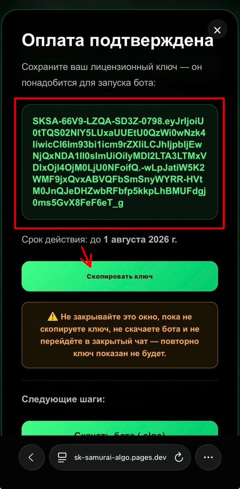
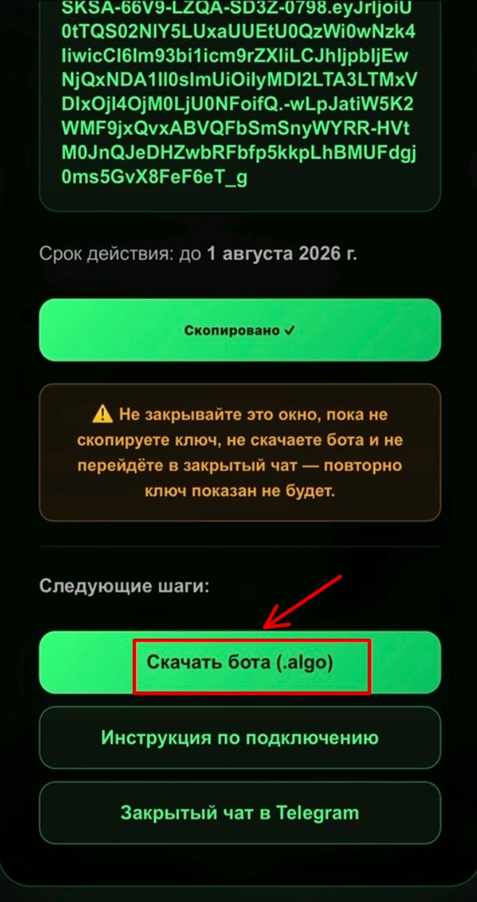
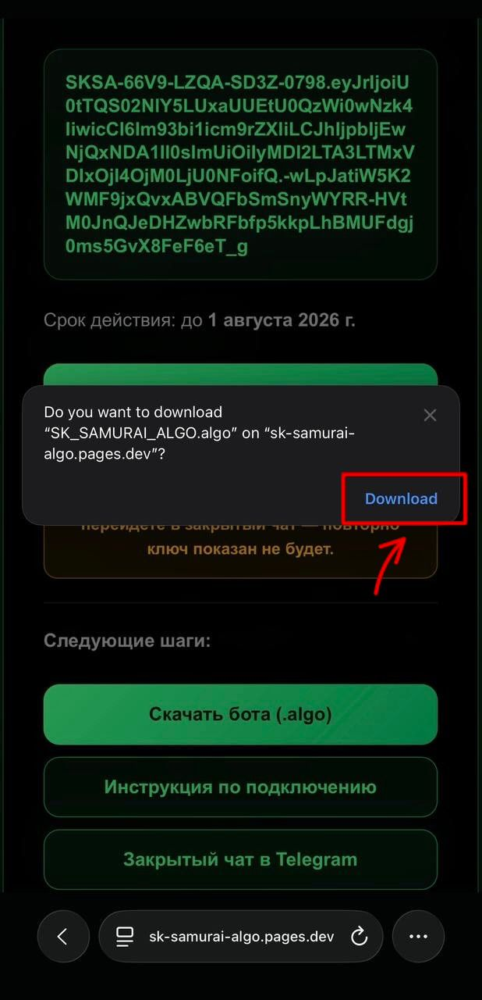
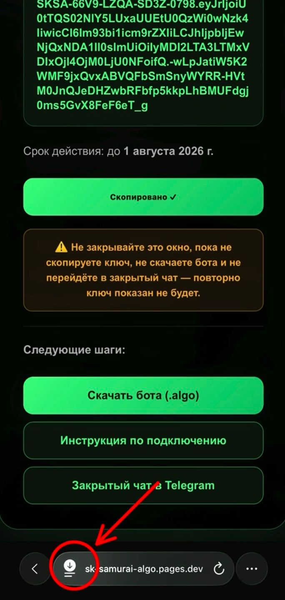
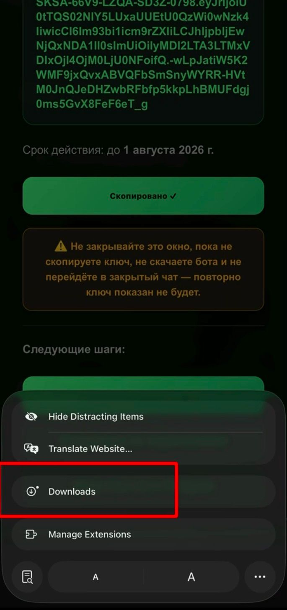
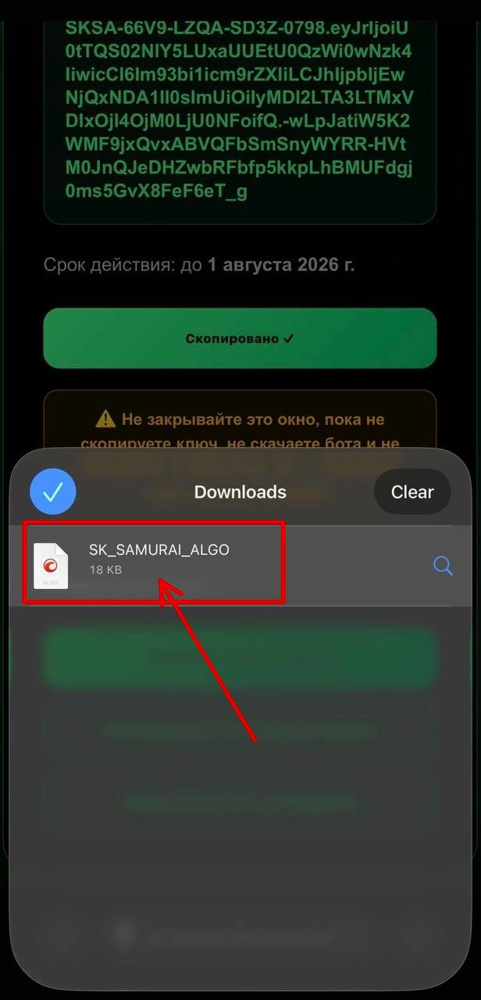
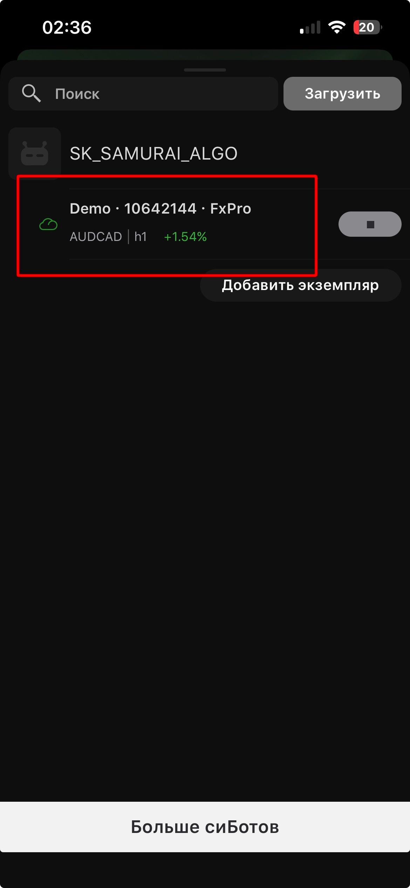
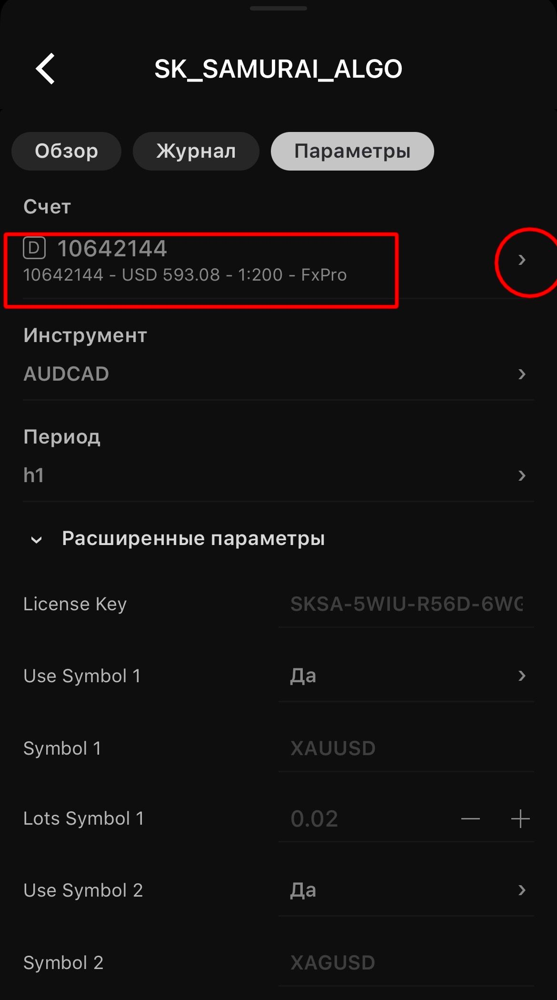
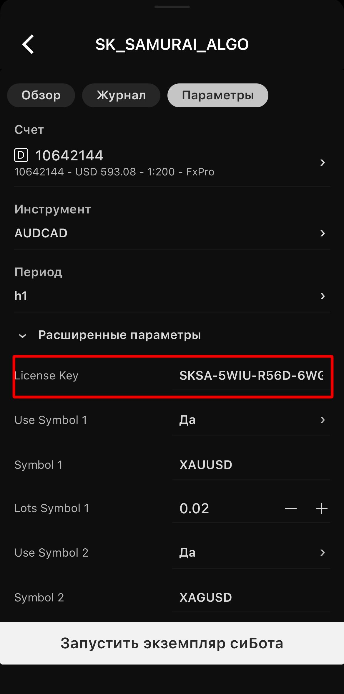
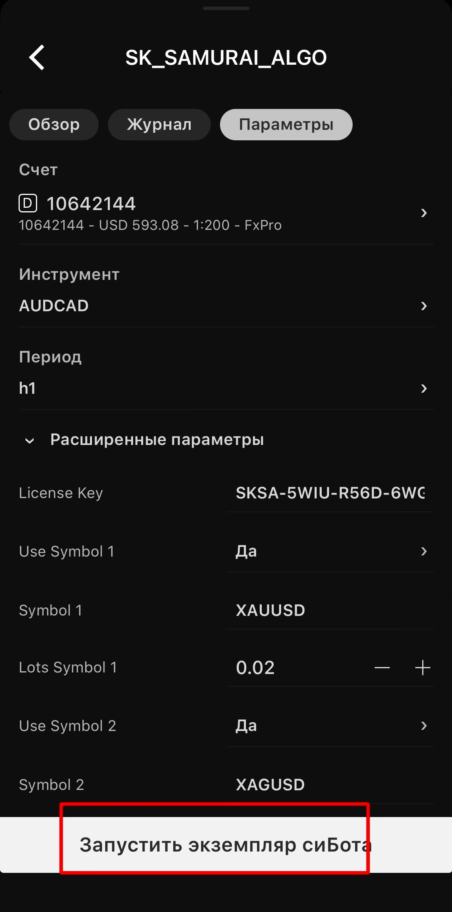

Инструкция по подключению
Подключение занимает 2–3 минуты. Просто следуйте шагам ниже.
Что понадобится
Установленный cTrader, файл бота SK SAMURAI ALGO (.algo) и ваш лицензионный ключ (License Key).
Где взять ключ
Ключ выдаётся после оплаты тарифа или подтверждения реферального доступа. Если ключа нет — напишите менеджеру.
Сколько счетов
Own Broker / Prop Firm — 1 счёт, Referral — 1 счёт. Запускайте бота на том счёте, для которого выдан ключ.
Подключение по шагам
Скопируйте лицензионный ключ
После успешной оплаты на экране отобразится ваш лицензионный ключ. Нажмите кнопку «Скопировать ключ» и сохраните его — он понадобится для активации SK SAMURAI ALGO.
Важно: не закрывайте эту страницу, пока не скопируете ключ и не скачаете бота. После закрытия страницы ключ повторно отображаться не будет.

Нажмите «Скачать бота (.algo)»
После копирования ключа нажмите кнопку «Скачать бота (.algo)».

Подтвердите загрузку
Если браузер покажет окно подтверждения загрузки, нажмите Download (Скачать).

Откройте раздел загрузок
После завершения загрузки нажмите на значок загрузок в нижней части браузера.

Перейдите в «Downloads»
В открывшемся меню выберите раздел Downloads (Загрузки).

Откройте бота в cTrader
В разделе Downloads нажмите на файл SK_SAMURAI_ALGO. После открытия файл автоматически импортируется в cTrader.

Выберите торговый счёт
После открытия cTrader откройте бота.

Выберите торговый счёт, к которому хотите подключить бота

Введите лицензионный ключ
Перейдите во вкладку «Параметры», найдите поле License Key и вставьте лицензионный ключ, который вы скопировали после оплаты.

Запустите бота
После ввода лицензионного ключа нажмите кнопку «Запустить экземпляр сиБота».

SK SAMURAI ALGO успешно активирован и готов к автоматической торговле на выбранном торговом счёте.
Круглосуточная работа (облако)
Чтобы бот торговал 24/7 без включённого компьютера, запустите инстанс в облаке cTrader.
Как включить облако
Рядом с инстансом нажмите значок облака — бот продолжит работать на серверах cTrader, даже когда ваш ПК выключен.
Важно про счёт
В облаке лицензия проверяется по номеру счёта. Запускайте бота строго на том счёте, для которого оформлен ключ, иначе в облаке он не активируется.
Продление лицензии
Касается тарифа Own Broker / Prop Firm. Для Referral-доступа продление не требуется.
Когда продлевать
Подписка действует 30 дней. Ближе к концу срока продлите её на сайте: Тарифы → «Уже есть лицензия? Продлить за 30 USDT».
После оплаты
Вы получите обновлённый ключ. Вставьте его в поле License Key вместо старого и перезапустите бота.
Если что-то не так
«LICENSE INVALID OR EXPIRED» / «Account not licensed»
Бот запущен не на том счёте, для которого выдан ключ, либо истёк срок лицензии. Проверьте номер счёта и срок действия. Если всё верно — напишите менеджеру.
«License Key is empty»
Ключ не вставлен в параметры. Откройте параметры инстанса и вставьте License Key в соответствующее поле.
Какая-то пара не торгуется
У вашего брокера нет этого инструмента — бот просто пропускает его и работает по остальным парам. Это нормально.
Остались вопросы?
Напишите менеджеру — поможем с подключением и запуском.